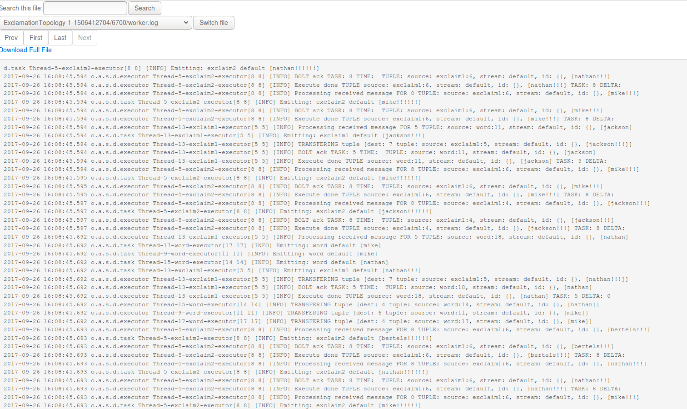
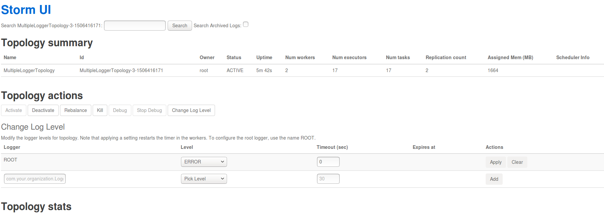

Storm 集群测试
Storm 创建完成之后可以测试其可用性，由于 Storm 客户端节点已自动完成相关配置，可通过 Web 终端 登录直接使用。
用户名：root，密码：storm
注意
测试需创建 Storm 客户端 节点，如创建集群时未创建该类型节点，可通过 新增节点 增加该节点。
Storm 集群主节点上启动了 Storm UI 服务。Storm UI 服务是一个基于 Web 的监控服务，它不仅可以查看集群、配置、Topology 以及各组件（Spout 和 Bolt）等的信息和日志，还可以暂停、激活、删除 Topology，更是 Topology 运行时的重要调优工具。
为了方便测试,使用并熟悉 Storm UI，请查看客户端节点 /etc/hosts 目录下 host 文件配置，建议添加 Storm 节点 host 至本地开发环境的 host 文件中，这样可以更加方便的通过 Storm UI 在本地浏览器上查看日志，建议使用高可用 storm_ui_vip：8080 访问与使用 Storm UI,其中 storm_ui_vip 在您创建好集群后可以在集群左侧栏看到。
注意：
本指南中所有的测试都是基于 Storm 官方自带的示例 storm-starter 进行的。
测试一：ExclamationTopology
ExclamationTopology 是一个非常简单的 Storm Topology 示例，它的 Bolt 会在每个单词后追加。
首先，在客户端节点上执行如下 storm jar 命令以提交计算拓扑。
/opt/storm/bin/storm jar /opt/storm/examples/storm-starter/storm-starter-1.1.1.jar org.apache.storm.starter.ExclamationTopology ExclamationTopology
下图展示了 storm jar 命令的执行结果：

Topology 提交成功后，用户可以在 Storm UI 上看到 ExclamationTopology 的概要信息，例如状态、运行时间、worker 数量、任务总数等，具体如下图所示。
点击 ExclamationTopology 链接，可查看该 Topology 的各个组件。
点击 exclaim1 组件，可以查看运行该组件的 executors，如下图所示。

点击 executors 中的 Port 列中的端口号，可进一步查看相应的日志。

若需要删除 Topology，可以在 Storm UI 的 Topology actions 栏，点击 Kill 按钮，如下图所示：

用户也可以通过执行如下 storm kill 命令来删除计算拓扑。
/opt/storm/bin/storm kill ExclamationTopology
测试二：ReachTopology
ReachTopology 基于 Storm 可实时计算 Twitter 网站上任意 URL 的 Reach 值，并通过 Storm 分布式 RPC 对外提供服务。
首先，在客户端节点上执行如下 storm jar 命令以提交 ReachTopology。
/opt/storm/bin/storm jar /opt/storm/examples/storm-starter/storm-starter-1.1.1.jar org.apache.storm.starter.ReachTopology ReachTopology remote
然后 Topology 成功提交运行后，接着创建用于发送 RPC 请求的客户端,为此，需创建一个基于 Maven 的 Java 工程，添加 storm-core 依赖包并创建 TestReachTopology 类, 该测试代码如下所示。
package com.yiqiyun ;
import org.apache.storm.utils.DRPCClient;
import org.apache.storm.utils.Utils;
import java.util.Map;
public class TestReachTopology {
public static void main(String[] args) throws Exception {
if (args.length < 1) {
throw new IllegalArgumentException("Invalid parameter");
}
String host = args[0];
Map conf = Utils.readStormConfig();
DRPCClient client = new DRPCClient(conf, host, 3772);
String[] urlsToTry = new String[]{ "foo.com/blog/1", "engineering.twitter.com/blog/5", "notaurl.com" };
for (String url : urlsToTry) {
System.out.println("Reach of " + url + ": " + client.execute("reach", url));
}
}
}
用于测试的 jar 包已经打好放在客户端节点了，可以执行如下命令,该命令中 “i-9hhwul25” 为 master 节点的 leader 角色， 参数请使用的是任意一个 master 节点 host,可以直接在客户端节点 host 文件中找到。
java -cp /opt/storm/examples/storm-drpc-client/storm-example-1.1-SNAPSHOT.jar com.yiqiyun.TestReachTopology i-9hhwul25
注意
官方这个测试用例较为复杂，需要请求 master 节点的 leader 角色，可以在 Storm UI 上查看到 leaer 角色的 host，当删除 leader 后，需要重新测试此流程。
执行结果如下图所示。

测试三：MultipleLoggerTopology
MultipleLoggerTopology 使用了很多 Logger，并持续地打印各种级别的日志。执行如下命令，可提交该 Topology。
/opt/storm/bin/storm jar /opt/storm/examples/storm-starter/storm-starter-1.1.1.jar org.apache.storm.starter.MultipleLoggerTopology MultipleLoggerTopology
通过 Storm UI 可查看其日志，日志中包含了 INFO、WARN、ERROR 等级别的信息，如下图所示。
不仅如此，Storm UI 还提供了动态设置 Log 级别的功能。

按上图设置完毕后，再次查看日志时只能看到 ERROR 级别的信息。

测试四：TridentWordCount
TridentWordCount 使用了 Storm Trident 接口，用于统计单词出现的次数。
为了通过 Storm UI 查看 event，需要打开 event logging 功能。在配置组中的找到配置项 topology.eventlogger.executors，将其值设为 1，集群即可开启 event logging 功能。
执行如下命令以，提交 TridentWordCount。
/opt/storm/bin/storm jar /opt/storm/examples/storm-starter/storm-starter-1.1.1.jar org.apache.storm.starter.trident.TridentWordCount TridentWordCount
通过 Storm UI 打开 debug 功能。 然后就可以通过 worker port 链接到日志，找到 events.log 文件，点击 switch file 可以看到如下结果。

测试五：SlidingWindowTopology
Storm 提供了流式窗口 API，支持 Sliding Window 和 Tumbling Window。
SlidingWindowTopology 展示了这两种窗口 API 的基本使用方法。
请执行如下命令，提交 SlidingWindowTopology。
/opt/storm/bin/storm jar /opt/storm/examples/storm-starter/storm-starter-1.1.1.jar org.apache.storm.starter.SlidingWindowTopology SlidingWindowTopology
通过 Storm UI 可以查看 tumblingavg 的输出，如下图所示。

除了自带的几个基本使用的例子之外，Storm 也可以很方便的与其他大数据组件整合。
例如：HBase、Kafka、Elasticsearch、Druid、Redis等。
详情可以参考Storm 官网中的 Integration With External Systems 和 Other Libraries。